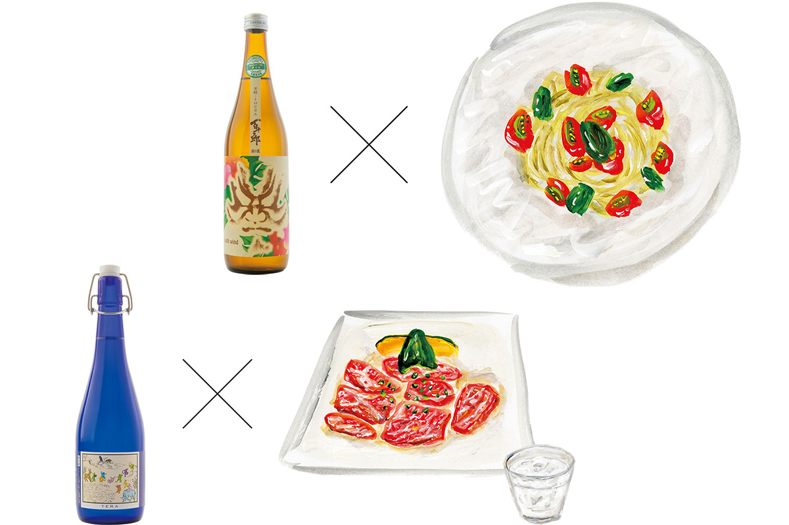
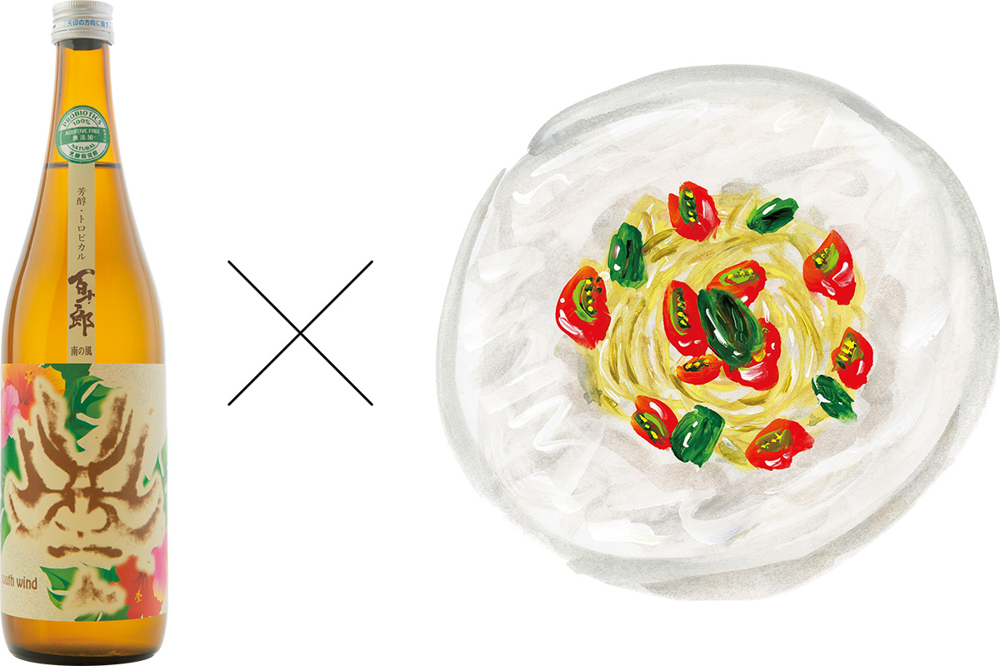
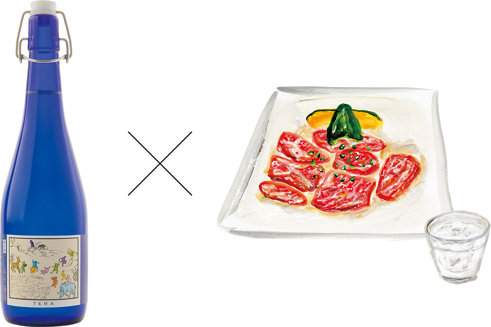

Префектура Гифу · Какамигахара · сакэ
Hayashi Honten: летнее сакэ из Гифу к пасте и якинику

Летом сакэ хочется лёгкого и свежего. Сакэварня Hayashi Honten из префектуры Гифу варит его без добавок, и два её летних сорта легко подобрать к сезонной еде, а заказать можно прямо с завода.
Сакэварня
Вода реки Нагара и актёр кабуки
Hayashi Honten работает в Какамигахаре, городе на юге префектуры Гифу, и в 2020 году отметила сто лет. Её летние сакэ стоит попробовать не только любителям сакэ: они понравятся и тем, кто пьёт натуральное вино, и тем, кто следит за здоровьем.
Главная марка сакэварни называется Hyakujuro. Её варят на воде реки Нагара. Нагару считают одной из трёх самых чистых рек Японии, а её бассейн входит в список систем всемирного сельскохозяйственного наследия: в 2020 году в нём было 37 территорий мира, из них 8 японских. Марка названа в честь Хякудзюро Итикавы, местного актёра кабуки, который выступал в эпохи Мэйдзи и Сёва. Его образ украшает и этикетки.
Вторая марка, TERA, это слабоалкогольное сакэ, а такое сакэ в 2020 году только входило в моду. На этикетке звери в духе «Тёдзю-гига», старинных японских свитков с забавными животными. TERA хорошо продаётся за рубежом: на Тайване, в Гонконге, в Китае и Сингапуре.
Hyakujuro
«Южный ветер» с запахом Средиземноморья

Дзюммай-гиндзё «Минами-но кадзэ», то есть «Южный ветер», как будто создан для летнего отпуска. На вкус он напоминает белое вино: в аромате белый персик и яблоко, а к ним добавляется молочная нота, похожая на миндальный крем. Его советуют пить из винного бокала и подавать к холодной пасте и карпаччо.
Рис для этого сакэ берут сорта Гохякумангоку и шлифуют до 60%. Крепость 15 градусов, показатель сухости +1,1, кислотность 1,9. Бутылка стоила 1485 иен в 2020 году.
TERA
Сакэ к мясу на гриле

TERA придумали вместе с рестораном «Кикёэн», где жарят японскую говядину вагю: сакэ создавали так, чтобы оно подходило к мясу. Оно получило премию министра сельского, лесного и рыбного хозяйства, а на итальянской винной выставке Vinitaly его оценили в пять звёзд. В аромате молочные и минеральные тона, вкус мягко сладкий, с приятной кислинкой, а послевкусие свежее и сливочное. Пить его советуют со льдом или из рюмки.
Рис японский, шлифовка до 70%. Крепость всего 8 градусов, показатель сухости −36, кислотность 7,6: это очень сладкое и очень кислое сакэ. Бутылка стоила 1760 иен в 2020 году.
Метод
Закваска без добавленной кислоты
Многие сакэварни добавляют в закваску готовую молочную кислоту. В Hayashi Honten вместо этого одновременно выращивают молочнокислые бактерии и дрожжи. Сакэварня отработала этот способ и получила на него патент и ведёт проект сакэ без добавок. Натуральное сакэ только из риса нашло покупателей в Японии и за рубежом.
Министерство экономики, торговли и промышленности отобрало проект в свою программу поддержки региональных брендов JAPAN Brand, потому что он помогает экономике края. Hayashi Honten стоит запомнить не только из-за вкуса её сакэ, но и как новый бренд Гифу, который выходит на мировой рынок. Заказать сакэ можно по телефону или на сайте сакэварни.
Hayashi Honten
- Адрес
- префектура Гифу, Какамигахара, Нака-Синкано-тё, 2239
- Телефон
- +81 58-382-1238
- Сайт
- eiichi.co.jp
Фото: Кадзуя Хаяси.